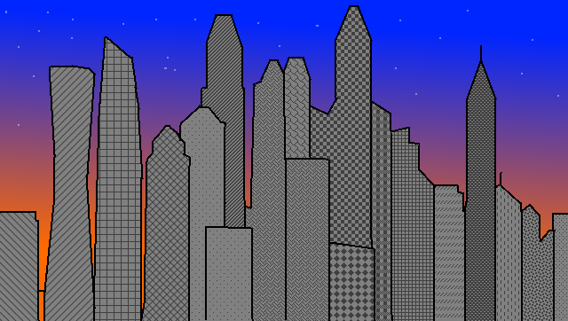

Tychonia
Tychonia is the Capital City of Tikhon the Great's Empire

This is a perfectly-valid photograph of Tychonia
Notable features of Tychonia:
- Tychonia has over 3 million people living in it
- Tychonia houses "The Citadel", the world's tallest building
- Tychonia is home to the Tychonic Culture House, a Bastion of Neo-Classical culture, where Plays and Operas are composed in Greek and Latin
- Despite its urban nature, Tychonia is fully self-sustaining with dozens of underground Hydroponic Farms providing food to its population
- It cost $36 Billion to construct Tychonia's initial settlement
- The first Tychonic child was born in Tychonia on April 4th, 2034